WotLK Warmane Icecrown - Tailoring 1 to 450 (x3), Bonuses and Gold Making
Cloak embroideries, leveling route, bags, leg enchants and gear for gold.
Tailoring Bonuses
Tailors get access to exclusive cloak enchants,
called “Embroidery” effects.
You can only have one at a time, and they
replace regular cloak enchants like +23 haste or +22
agility.
| Embroidery | Effect | Avg. Bonus (vs regular enchants) | Notes |
|---|---|---|---|
| Lightweave Embroidery | 295 Spell Power for 15 sec (proc, 45 sec ICD) | ≈ +73 Spell Power average | BiS for casters/healers |
| Swordguard Embroidery | 400 Attack Power for 15 sec (proc, 45 sec ICD) | ≈ +100 Attack Power average | Excellent for physical DPS |
| Darkglow Embroidery | 400 Mana restored (proc, 60 sec ICD) | ≈ +15–20 MP5 average | Useful early for healers with mana issues |
Leveling from 1 to 450
Materials Cost
Cost: ± 1500-2000 Gold (from Auction House)
Required Materials
Classic 1-300
| Cloths | Vendor |
|---|---|
60 Linen Cloth 90 Wool Cloth 260 Silk Cloth 112 Mageweave Cloth 260 Runecloth |
10 Coarse Thread 37 Fine Thread 13 Silken Thread 20 Heavy Silken Thread 24 Rune Thread 13 Gray Dye 10 Blue Dye 20 Red Dye 2 Bleach |
| TSM String | |
Linen Cloth/exact/x60 Wool Cloth/exact/x90 Silk Cloth/exact/x260 Mageweave Cloth/exact/x112 Runecloth/exact/x260 |
|
TBC 300 - 375
| Cloths | Misc | Vendor |
|---|---|---|
| 245 Netherweave Cloth | 10 Arcane Dust 6 Knothide Leather Pattern: Bolt of Imbued Netherweave (Shattrath) Pattern: Netherweave Tunic (Shattrath) |
7 Rune Thread |
| TSM String | ||
| Netherweave Cloth/exact/x245 | Arcane Dust/exact/x10 Knothide Leather/exact/x6 |
|
WotLK 375 - 421 (for cloak enchant)
| Cloths | Misc | Vendor |
|---|---|---|
| 550 Frostweave Cloth | 14 Infinite Dust For cloak enchant, get one of these depending on the enchant your want :
|
17 Eternium Thread (Dalaran vendor) |
| TSM String | ||
| Frostweave Cloth/exact/x550 | Infinite Dust/exact/x14
|
|
WotLK 421 - 450
| Cloths | Misc | Vendor |
|---|---|---|
20 Bolt of Frostweave 60 Bolt of Imbued Frostweave |
90 Infinite Dust 12 Ebonweave 3 Frozen Orb |
21 Eternium Thread (Dalaran vendor) |
| TSM String | ||
Bolt of Frostweave/exact/x20 Bolt of Imbued Frostweave/exact/x60 |
Infinite Dust/exact/x90 Ebonweave/exact/x12 Frozen Orb/exact/x3 |
|
Leveling 1-450
Tailoring Trainer
For Tailoring, you can level up from 1 to 450 with only 1 trainer : Dalaran - Charles Worth
Classic
| Level | Craft | Quantity | Total Material |
|---|---|---|---|
| Learn Apprentice Tailoring | |||
| 1-52 | Bolt of Linen Cloth | 21-30 | 60 Linen Cloth |
| Learn Journeyman Tailoring at 50 | |||
| 52-76 | Heavy Linen Gloves | 9-10 | 10 Bolt of Linen Cloth, 10 Corse Thread |
| 76-106 | Bolt of Woolen | 26-30 | 90 Wool Cloth |
| Learn Expert Tailoring at 125 | |||
| 106-127 | Gray Woolen Shirt | 11-13 | 26 Bolt of Woolen Cloth, 13 Fine Thread, 13 Gray Dye |
| 127-145 | Bolt of Silk Cloth | Need 65 for future crafts | 260 Silk Cloth |
| 145-160 | Azure Silk Hood | 5 | 10 Bolt of Silk Cloth, 10 Blue Dye, 5 Fine Thread |
| 160-172 | Silk Headband | 4 | 12 Bolt of Silk Cloth, 8 Fine Thread |
| 172-175 | Formal White Shirt | 1 | 3 Bolt of Silk Cloth, Fine Thread, Beach |
| 175-187 | Bolt of Mageweave | Need 28 for future crafts | 112 Mageweave Cloth |
| 187-202 | Crimson Silk Vest | 5 | 20 Bolt of Silk Cloth, 10 Red Dye, 10 Fine Thread |
| Learn Artisan Tailoring at 200 | |||
| 202-217 | Crimson Silk Pantaloons | 5 | 20 Bolt of Silk Cloth, 10 Red Dye, 10 Fine Thread |
| 217-220 | Black Mageweave Leggings | 1 | 2 Bolt of Mageweave, 3 Silken Thread |
| 220-232 | Black Mageweave Gloves | 4 | 8 Bolt of Mageweave, 8 Heavy Silken Thread |
| 232-250 | Black Mageweave Headband | 6 | 18 Bolt of Mageweave, 12 Heavy Silken Thread |
| 250-262 | Bolt of Runecloth | 65 | 260 Runecloth |
| 262-277 | Runecloth Belt | 5-6 | 18 Bolt of Runecloth, 6 Rune Thread |
| Learn Master Tailoring at 275 | |||
| 277-295 | Runecloth Gloves | 6-7 | 35 Bolt of Runecloth, 14 Rune Thread |
| 295-301 | Runecloth Headband | 2 | 12 Bolt of Runecloth, 4 Rune Thread |
TBC
| Level | Craft | Quantity | Total Material |
|---|---|---|---|
| 301-325 | Bolt of Netherweave | 49 | 245 Netherweave Cloth |
| 325-337 | Bolt of Imbued Netherweave (Recipe) |
5 | 15 Bolt of Netherweave, 10 Arcane Dust |
| 337-346 | Netherweave Boots | 3 | 18 Bolt of Netherweave, 6 Knothide Leather, 3 Rune Thread |
| 346-352 | Netherweave Tunic (Recipe) |
2 | 16 Bolt of Netherweave, 4 Rune Thread |
WotLK
| Level | Craft | Quantity | Total Material |
|---|---|---|---|
| Learn Grand Tailoring at 350 In Northrend | |||
| 352-376 | Bolt of Frostweave | Need 110 for future crafts | 550 Frostweave Cloth |
| 376-382 | Frostwoven Belt | 2 | 6 Bolt of Frostweave, 2 Eternium Thread |
| 382-388 | Frostwoven Boots | 2 | 8 Bolt of Frostweave, 2 Eternium Thread |
| 388-397 | Frostwoven Cowl | 5-6 | 30 Bolt of Frostweave, 6 Eternium Thread |
| 397-400 | Duskweave Belt | 1 | 7 Bolt of Frostweave, Eternium Thread |
| 400-406 | Bolt of Imbued Frostweave Cloth | 3-7 | 14 Bolt of Frostweave, 14 Infinite Dust |
| 406-412 | Duskweave Wristwraps | 2 | 16 Bolt of Frostweave, 2 Eternium Thread |
| 412-415 | Duskweave Gloves | 1 | 9 Bolt of Frostweave, Eternium Thread |
| 415-421 | Duskweave Boots | 2 | 20 Bolt of Frostweave, 2 Eternium Thread |
| You can enchant your cloak with: | |||
| 421-421 | Darkglow Embroidery (Mana) | - | Ebonweave, Eternium Thread |
| Lightweave Embroidery (SP) | - | Moonshroud, Eternium Thread | |
| Swordguard Embroidery (AP) | - | Spellweave, Eternium Thread | |
| 421-427 | Duskweave Boots | 2 | 20 Bolt of Frostweave, 2 Eternium Thread |
| 427-442 | Frostweave Bag | 6-8 | 48 Bolt of Imbued Frostweave, 16 Eternium Thread |
| 442-450 | Ebonweave Gloves | 3 | 12 Ebonweave 12 Bolt of Imbued Frostweave, 3 Eternium Thread, 3 Frozen Orb |
How to make gold with Tailoring
Leg Enchants
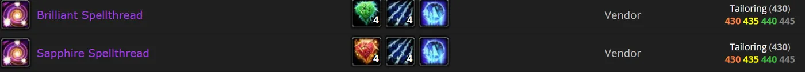
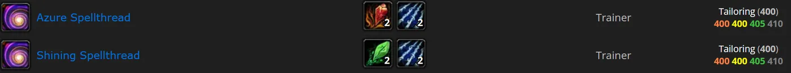
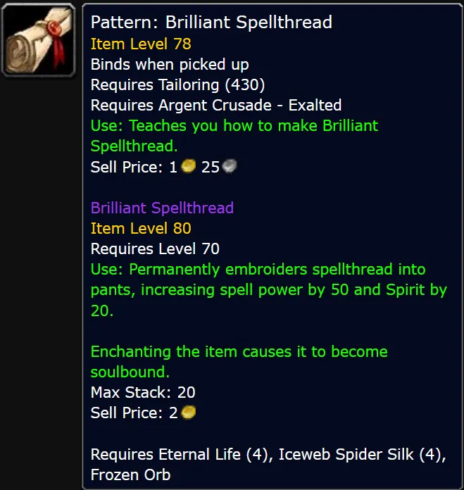
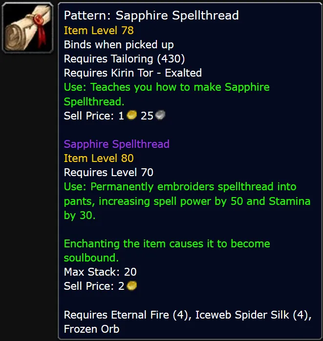
Bags
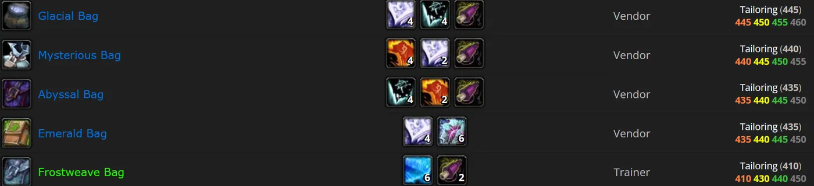
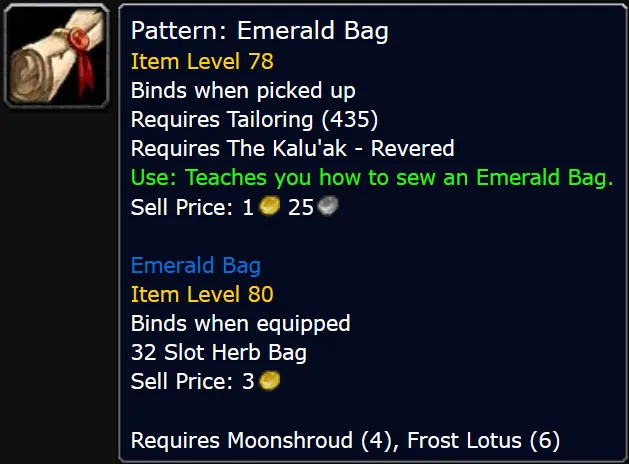
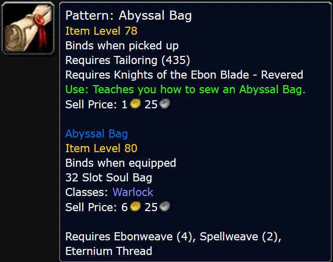
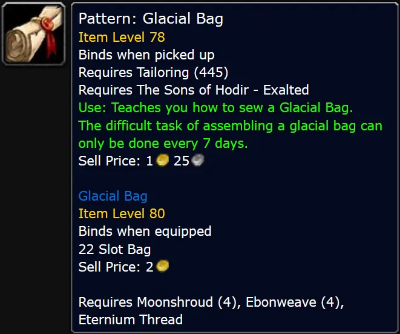
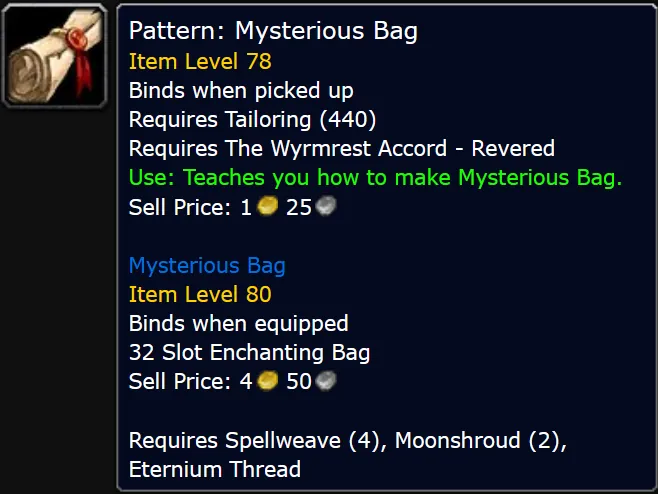
Gear
264 Item Level
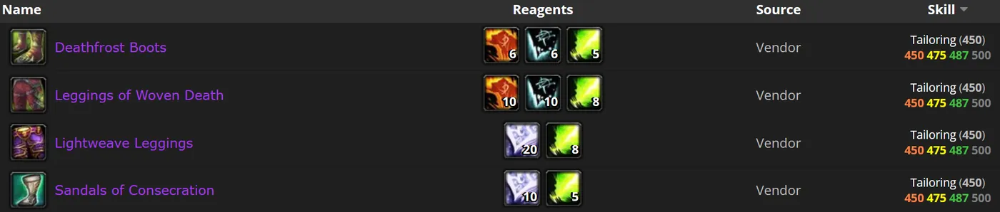
Recipe vendor: Alchemist Finklestein in Icecrown Citadel (raid).
Requires to be Revered with the Ashen Verdict to get all the recipes (some of them only require Honored).
245 Item Level
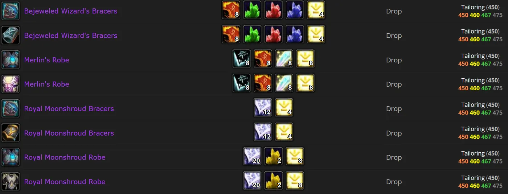
Recipes drop in Trial of the Crusader (ToC raid) or you can buy them in the Auction House.
Each item has a Horde and Alliance version.
232 Item Level
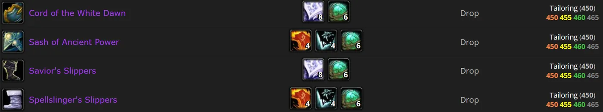
Recipes drop in Ulduar (raid) or you can buy them in the Auction House.
213 Item Level
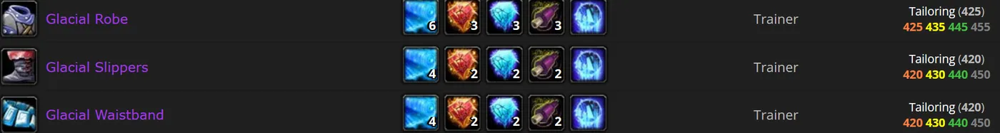
200 Item Level
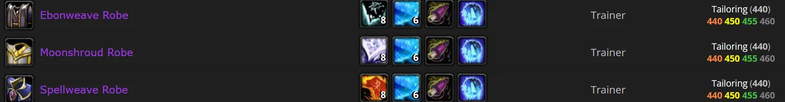
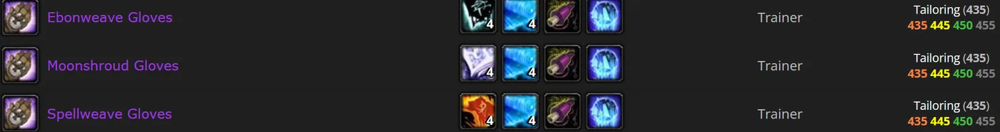
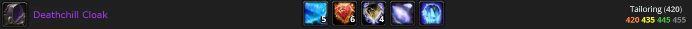
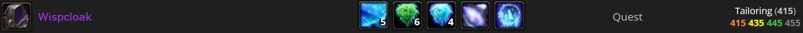
Rare and uncommon WotLK gear
Source
https://forum.warmane.com/showthread.php?t=384147